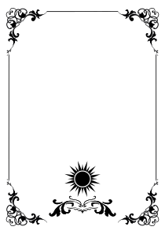
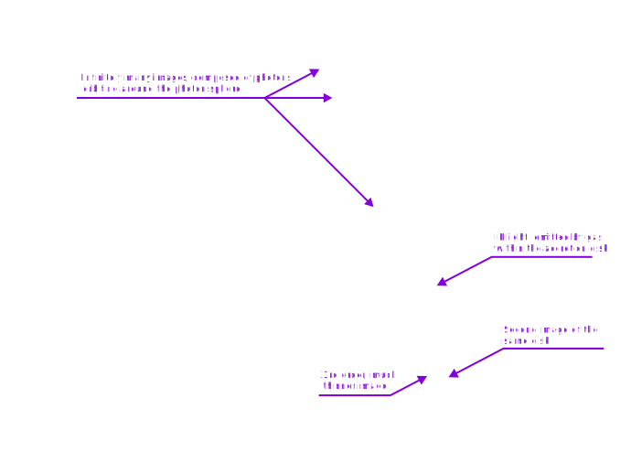
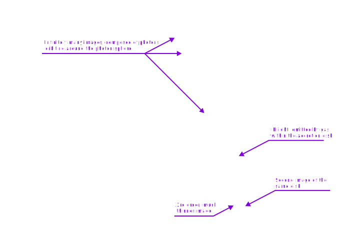
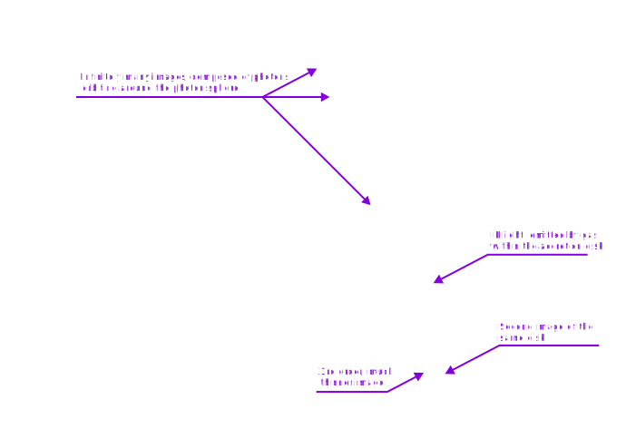

The moths belong to flame; and yet, what are you looking for at the bottom of abyss?
Is it a teacup fashioned whole from Universal Sin, which is full of deceit?
I shall make one for you.
Is it the fabled flower with pure black petals, which flavour so sweet?
I shall show one to you.
But please, do not expect anything —
For one who close own nose and mouth, surely, they are nothingness...
And how could you drink up the well?!
Who gave you the sponge to wipe away the entire horizon?
What were you doing when the earth was unchained from its sun?
Whither is it moving now?
Whither are you moving? Away from all suns?
Are you not plunging continually? Backward, sideward, forward, in all directions?
Is there still any up or down?
Are you not straying as through an infinite nothing?
Do you not feel the breath of empty space?
Has it not become colder?
Is not night continually closing in on you?
Do you not need to light lanterns in the morning?
Do you not hear as yet of the noise of the gravediggers?
Do you smell nothing as yet of the divine decomposition?
For Dreams too, decompose.
And
Epilogue
[BGM]:
"It grieveth me..."
The ever-lasting crimson shower; fair lycoris radiata. The place where i abode for ever long.
Sunk in woe, forsaken kitling that beareth away the sin of the world. I may not thole such doleful lot.
Mother, turn on me thine eyes,
See my blushes, hear my cries;
Faint though be the cries I make,
Save me for thy mercy's sake,
From the worm, and from the fire,
From the torments of thine ire.
Though many be smitten and fall, they ever came forth anew. — A struggle wholly pointless.
The little heart ceaseth in its inexplicable agony. Sed infelix, the cruel malediction permitteth not death to claim its stead until the end of ends.
< ... >
A little frail maiden laid upon the earth's face, weeping and shivering from the cold, as rain turned slowly into snow.
Lo, in the heavens above, a lone sea mew took flight. Reflected in its diminutive orbs were red hills abloom with flowers, a far-off sea, tarnished by time, an end serene...
< ... >
From a rare breach in the clouds, a ray of transient starlight had shone upon. [Living so close to the galactic centre, the starlight combined has been almost as bright as a crescent moon. What a marvelous sight! Yet, nobody really cared to look up in the sky, until it was too late.] As she gently wiped tears, a black cat stepped down from the sky; fashioned with a blue ribbon on the tail, and a radiant halo on the head.
Flying over, one spake without speaking anything:
"𝕸𝖆𝖞𝖊𝖘𝖙 𝖙𝖍𝖔𝖚 𝖍𝖆𝖛𝖊 𝖘𝖜𝖊𝖊𝖙 𝖉𝖗𝖊𝖆𝖒𝖘, 𝖒𝖞 𝖑𝖎𝖙𝖙𝖑𝖊 𝖒𝖆𝖎𝖉", grants eternal rest.
Act I
A glimmer of cold blue through the windows of roses
Did scarce reveal the glory of the temple great and high.
An altar in the midst thereof adorned with blooms fair and false,
Whose thorns will prick the fingers of the unwary nigh.
No sound did break the stillness of that solemn holy place,
A haven of sweet peace, or else a tomb of desolate decay?
Slowly, a doll did her bright and beauteous eyes unveil,
At last awakened, she found herself on a chair put.
But anon, a queer sensation had her very essence pervaden:
The vivid glass murals a certain girl hath shown,
And in her chest a little sword hath the heart disown.
She knew not the length of her repose, nor what kind of realm rose;
What kind had reverenc'd her, but to disappear once again.
A grievous lot for such a child, to never see face of a kind feeling,
Or that spoke a gentle word in her ever-being!
With their chambers manifold, the dim temple's halls did maze her own;
And many a tome that told of wonders, penned in tongues unknown.
One resolved to roam, to question the mystery of a life now long forlorn.
Ere long, she chanced upon a chamber with garments rich and fine,
And teas of many flavors, and array of plushies — as if predefine'.
But in a chamber's corner shadowed, 't was a little ensemble,
And there, forlorn and orphaned... laid another doll divine.
A masterpiece of craft and skill, but of whom doth she resemble?
A frame more complex, than any creature of earth born;
A mind bestown for the movement and thought, but of greater import —
To live beyond all things that bore before...
Perhaps, one day to be an aid, to the girl of lonely birth;
But alas, for it was late, as she would not wake again —
Proving once more the truth well known. Yet even so,
She took her in her arms, with a love that knew no pain.
< ... >
Interlude
As the end of the plot slowly drew nigh, the Man accepted one's fate. The multitude of the living ere knew that all their trials and setbacks, their concealments and hard-earned survival, had lost meaning. Against the grander canvas of the cosmos as a whole, a terrifying, unanticipated change was about to take place. Dim photons from already perished galaxies billions of light-years hence had crossed the infinite darkness of space to illuminate this chancel, like letters without recipients silently recounting bygone legends of the vanished.
One of these beams arose from a corner of the creation once hight "the Milky Way." It was so feeble that the eyes of the most part of the living could not discern it, once held innumerable legends that moved heaven and earth.
But the memory of the fables had waned, and there was none left to mark their passing. The curtain had fallen and the players had departed from the stage; the audience had scattered to the winds; even the theater had long since fallen into ruin. Yet so, stubbornly, Man would not acknowledge this very truth — as all play, verily, was nothing but for vain? For a long time, the two lullabies helped to calm the minds of those vexed by the dread of being. Yet eventually even they became a mere nonentity...
Still, there was something left of a little consolation; the illusion shall remain intact.
< ... >
The Lexyrinth, Alexandria's forgotten crave. Beautiful petals spanned on volumes that human senses struggled to comprehend. Small on the edges, but combining into ever larger ones, ultimately coming together into a heavenly, ever-complex flower pattern. At each of the innumerable leaves was a book, not larger than ten centimeters on all sides; each and every serving as ultimate vestige of one's entire existence, but altogether — comprising repository of all knowledge.
Arranged by historical import were closer to the centre. And at the place where all branches merged together lay profound, Ab Aeterno. However, never fully conceived by any, its grand mystery shall remain inviolate for evermore.
< ... >
After a long quest, the way out showed itself at last.
Upon a great while the doll bespoke:
— "Dost thou verily believe thou meritest to be content?"
— " ... "
< ... >
[Cathedral main gateway]
Against all foresight, the egress led not unto outside:
Through passages intricate, the journey stretched ahead,
Illusions torn asunder, wood and stone gave way to the artifice of a craft high:
Walls of metal, wrought with care, through which ran threads of superconducting ire.
Yet akin to the temple cold and abraded, stirred doubt:
"What purpose holds this «Illumination»?" — one thought.
Divided the domain was in tiers high and deep, each into unknown sections split,
And stairwell at the heart, perhaps infinite extent seem'd?
Though paths of intrigue beckoned at every turn, she resolved to tarry not,
In pursuit of that one pursue, her resolve would rest not.
[BGM]:
[From recordings of the Head Priest, year ???]
Our realm is absolute black. Not a single blink appeareth on the horizon, neither in the sky. And that is for reason. Of our number, but a scant few remain, truly. Yet whilst the sole, guarded Light within our walls abideth, so will the Hope. And thus, we've called ourselves "The Lightkeepers".
A tale of yore hath been bequeathed by our forebears, through countless millennia.
In an age long past, there existed a dominion, endowed with riches far beyond our ken. Their might stood unrivalled in all the charted lands, yet, they met a foe, so frightful one. Even with all their power, they prevailed not. As a last resort, they yielded to hide. An idea of madness born, but there was no choice.
Eventually, our ranks decreased. The breadth of our knowledge, once vast, hath perished.
< ... >
Whilst I tarried in the annals, an ancient chart came to light. Perhaps there are still alive people, all alone in that void. We have dwelt here too long, being alive yet not living... Hence, I resolved to embark upon a quest, though the odds be nigh insurmountable.
< ... >

To ignite a brand beyond our walls is folly, not a single spark — for they might come. We are blind in this endless dark forest, beset by malevolent crimson eyes. But 't is still possible to navigate: heedful attention to sylvan zephyrs may unveil the lay of the land. Of greater import, I possess my steadfast celestial lodestone, unwavering in its course. And for good measure: we are wont to leave a faint but clear flavour on our path — to guide us homeward.
The company, a quintet in number, creeps with deliberate pace, on all fours, in alignment straight. Each is bound by a single cord, preventing from getting astray as well as serving the purpose of direct converse — for even the faintest whisper courts peril.
< ... >
We have established our encampment within a corridor.
Tempted am I to succumb to slumber: for when mine eyes do close, the fringe of vision begin to stir. Entity more shadowy than the gloom itself; drawing nigh, the gaze ever unyielding. The presence is strong, and dreadful. But every time I rise, there is naught after all. Sleep hath eluded me for a hundred hours...
We must press on.
[Recordings of the Head Priest, vol.2]
[495'000 years later]
After arriving at a destination, the second stage began.
Our best researcher, Anna, has been assigned to the project, and the task required was immense. Even by applying our best bayesian models, estimated success of our search lies within the domain of 6.25*10-8. And so, may we sing once more...
[BGM]:
Turning and turning in the widening gyre
The falcon cannot hear the falconer.
On that awful day Avengers have appeared
To bestow judgment for the sins of man.
Heavens open up as nature sickens with dismay;
A million suns had shone their holy light.
The slate wiped clean, but will the Maker start anew?
A vast image out of Spiritus Mundi troubles my sight:
Somewhere in snows of the desert
A little shape with human body and the ears of a cat,
A gaze blank and pitiless as the sun,
Is moving its slow thighs, while all about it
Reel shadows of the indignant hellish birds.
The darkness drops again; but now I know
That endless centuries of stony sleep
Were vexed to nightmare by a rocking cradle,
And what rough beast, its hour come round at last,
Slouches towards Bethlehem to be born?
The prayer had been heard, and the Revelation has come.
< ... >
A probe has been launched on the orbit of what was now a long astray, orphaned, sunless planet.
$ Instrument status report.
Wide-band radio receiver: active
Ground penetrating radar: disabled
X-ray sensor: active
Gamma-ray sensor: active
ν-quant sensor: active
Gravimetric atom interferometer: disabled
However, it quickly became apparent that the place was fully dead.
After some time, our team decided to set on the ground to perform close inspection, while Anna continued to operate the probe. This was when she noticed a strange signal — as if angel's silent laments. Apparently, the ν-quant instrument have picked very faint emissions from deep below the surface. Further analysis of what seemed to be a noise before, revealed gamma-rays as well — which allowed to determine the location with far higher precision.
Methods: unlike the rest, ν-quant sensor was a relatively new invention, with the original concept first proposed by me. The "strong-force material", whose every particle held together by the strong nuclear force instead of electromagnetic molecular one previously found its use in the military applications. But as it is common — consequently — further development opened for us new research prospects in multiple fields.
Typically, neutrino particles do not interact with normal matter, thus posing considerable challenge for their detection. As been shown, attenuating neutrino flux by fifty percent using lead metal would require thickness of at least one light-year across.
However, unlike normal matter, strong-force material was arranged in a thin sheet, as crystalline lattice of close-packed neutrons and protons. The incoming antineutrinos with energy above 1.8 MeV, striking the surface, underwent Cowan-Reines process (νe + p → e⁺ + n). The produced positron quickly finds an electron pair, which annihilate into two detectable gamma rays. A CCD array was placed right before, forming an image. Thickness of a few nanometers of the strong-force material have proven sufficient for reaching a decent signal-to-noise ratio.
Yet, the work is far from complete. For such was my long dream — an efficient transmitter has never been made yet. May our souls dwell in silence, forever unheard...
< ... >
The surface of the planet was mostly flat, and only occasional metal structures used to remind of now faded life...
Without much preparation, our archaeological research began.
First was a layer of thin and translucent snowflakes covering the tranquil resting place. By the weak light from a few torches they gave off a faint blue glow, like pieces of dancing mica. This was frozen oxygen and nitrogen.
Next, the snowflakes became large and heavy, like pieces of solidified darkness. Someone whispered next by, "This must be carbon dioxide, dry ice." I turned around and saw that the speaker was Anna.
The lowest layers were harder to dig, mostly solid water ice with a crimson red tint, spanning as deep as 60 meters.
Finally, the excavation process got down to the actual surface, revealing the source to behold...
Act II
[5000 hours later. Level 0]
Behold, a chamber yonder with portal of steel, and massive; surmounted by words of daunting portent; written in a language archaic, governed by primitive grammar, of which alphabet comprised twenty and six glyphs — did read: [Tomb of The Frozen Star].
Amidst the penumbra, a mystery still linger'd, unrevealed: dim outlines, erst formless, coalesced within the void but a moment past, manifesting a monument of lore — which surpassed in age the very foundations it lay amongst — the Fabled Mirror, which spoke truth to liars of their own — now was mere silent sigil from the epoch of Light...
Still dazed, she drew nigh, gazing unto cerise reflection.
"Who am I?"
<No answer>
"When am I?"
<No answer>
Accounting for Kerr metric...
2.1 * 10^100 years
"Hence are all?"
<No answer>
No other alive beings exist.
One shall ever remember the sanctified tears, the chalice of sanguine and gold that emanated from the Maiden's eyes, as she silently lamented the moment of her blessed twisting.
For such is exacted Mirror's price, and hecatomb* — the most precious dreams asunder illusions alike...
Beyon' yon portal layeth naught but blackest night —
No star nor moon didst grace undefin'd sky with light.
The earth eke as dark, no living shade in sight,
And death itself had lost its dreadful power and might!
[For that is not dead which can eternal lie,
And with aeons strange even death may die...]
Through the veils, a sole wanderer pas'd aline,
And in her grasp, a feeble light did shine.
Aline signs bound, whither observatory stood,
A modest structure, lacking any scope.
But there within, a queer device did abide —
Allowing to see beyond the cliff of Hope.
Set exposure to 1 minute...
Set exposure to 1 hour...
Set exposure to 25 hours...
Set exposure to 250 hours...

Upon the cliff so steep and grand,
A settlement afloat, took its stand. And below —
Unknown, menacing, vast, the depths unshown.
It seemeth near, that calls with voice so deep,
A single step, into the void you leap!
[past memories]
AC: "Welcome, yet another moth."
AC: "As a last request, it has been built. What do you wish for?"
Creator: ...
AC: "Then so be it."
AC: "Enter the initial condition:"
Creator: ...
AC: "Enter the axiom:"
Creator: ...
< ... >
< ...... >
[#2'578'917 has been created]
- Innocent wish -
[GOOD END 1: Thus Bethlehem shone evermore]
[MEANINGLESS END 1: Broken Record]
[Unlocked: Then]
Then
"Thou couldst remember it, dost thou not? Thine very future, already written out. That is the consequence of committing such a Sin."
"One hast two choices now.
First — read it all nonetheless, but would experiencing such a life bring the illusion of happiness ever again?
Second — prefer ignorance. But yet, thou wilt always know this fact nonetheless, even at this very moment — as I already happen to know which one will it be.
𝕳𝖔𝖜 𝖉𝖔𝖘𝖙 𝖎𝖙 𝖋𝖊𝖊𝖑 𝖑𝖎𝖐𝖊 𝖙𝖔 𝖑𝖆𝖈𝖐 𝖙𝖍𝖊 𝖋𝖗𝖊𝖊 𝖜𝖎𝖑𝖑?!"
[BGM1]:
[BGM2]:
It will never be known whether there was a mistake in the data, or a miscalculation took place, but AC was no more.
< ... >
Only a single girl left in the universe, and... darkness. Floating for ever and ever. Space and time did not exist anymore, because there was no difference between the past and future. The girl was neither dead nor alive, as there was not much of difference either.
After a timeless interval, random quantum fluctuations in the dirac sea happened just right to make what once had been a butterfly... which shattered in the next moment. Or maybe it was just her imagination?
"I want to see it once more..."
There was once a certain vision I saw in a mirror I cherished so well.
There were myriad of crimson coloured irises accompanied only by their reflection.
The eyes remained still, not once blinking in the short amount of time they had stayed, staring directly at me and no one but... me.
All I can remember are a few memories, which I lived in my forgotten existence. Recollections which once belonged to... me.
In all honesty... Who am I, I wonder.
They are certainly mine, and yet...
Here they dwell, inside this endless void, where I exist.
Ever reminded of these feigned crimson irises, which replayed once and again, a countless times has such a memory been showcased inside my small mind...
< ... >
I also remember a dream I once had, a tremendously vivid one...
A red carpet had been laid before my feet, which guided me towards a single opening on a darkened wall, one that seemed to advance further and further with every step I took.
In an instant, I was cast into a realm I knew not of.
On the other side of the gap I found a reflection... my reflection...
Silky blue hair covered my back, loosened and swaying from each blow, which comely framed my violet eyes.
Standing before me was a little girl arrayed in fine, frilly garments...
Who was this person I had never seen? Could it be... me?
I recall lifting my small hand and touching my own cheek. Such a gesture engraved itself into my memory. The soft texture of my skin, the free and effortless movement I had made to raise my hand made me realize I could move.
Such a strange sensation of empowerment filled my soul and body, leading me to a feeling of excitement which lured my fancy astray.
I was... not only was I real, I was alive! That little maid reflected on the mirror was me and I could breathe, and live!
Unexpectedly, a ghost appeared from the back, another girl — just like me, willing to give a very gentle hug!
Life dwelt inside my body and yet...
As I turned to look at her face, the same light which had peeked into my eyes had blinded me once again, leaving me back in my darkness where I... stayed...
Deprived of senses, deprived of a sensation I once knew as "life"...
I stayed.
Please... show me the light...
I want to see it once more, I want to... live.
The Last Observer sat alone in a room.
There was a knock on the door...
Terminal Era, Year 1, 0 hours, 0 minutes, 0 seconds
[BGM]:
In the bleak canvas' plain, where gleam'd one single, melancholy ray, throughout that darkness dimly shed a light ephemeral of one, who, sinister as the dead, betook its spectral stand. Awfully a smile, the ghost was aware: within this vast expanse, no soul thence wouldst recognize its guise, and shape. Its world had long ago disappeared, leaving no vestige behind.
Yet, at the very end of creation, where time itself ceased its flow, this ghost stubbornly clung to a story long since concluded.
Adrift in darkness, it extended a limb - perchance a paw - and revealed it. Within its grasp, a minuscule orb of argent light did hover.
The ghastly gaze mirrored of infinite stars, beholding the silvery mote - as if lost in reminiscence. The bright dot drifted up and down akin to a delicate firefly, so small it might vanish ere long, yet embodying all possibilities. 'Twas a conduit of last frozen star, wormhole minute, a galaxy’ worth of mass-energy comprising.
After some time, the ghost issued its order. The bright dot dissolved into a silver thread, stretching forth as if endless timeline. In another instant, the thread unrolled into a pallid plane. A tertiary dimension took form as the plane did undulate and wax in depth, but the depth was naught to its span and breadth: The ghost had unfurled a giant sheet of blank drawing paper, and now hovered aloft.
With arms outstretched and soaring, a light breeze trailed its passage - an atmosphere materialized out of nowhere. Beneath it, the sheet of paper danced to the wind, forming wrinkles and billows. The crests and valleys anon hardened into highlands, dales, chasms, and leas.
Thereafter came inferno and deluge. As grand explosions did burst asunder, oxygen and hydrogen, born out of pure energy, combined into radiant blazes that coalesced into a sea of flame. New water molecules spawned by the alchemy fused into droplets, merged into clouds and mists, and then consolidated into torrential downpour that assailed the nascent earth. The ceaseless rain flooded the plains, converting them into vast oceans.
The ghost swept o'er the waters like a gigantic bird and landed upon a barren strand. Its limbs — one towards the surges and one towards the hills — it hoisted both in unison. Brontobytes of data within its essence stirred to life and, drawing energy from the environs, took form; life appeared in water and on land, as if sown by tempest. Shoals of fish and pods of whales leapt out of the tides to honor their creator; patches of grass and stands of trees erupted from the soil, with beasts and creeping things wandering amongst them; flocks of birds grand and small swept across the sky. The clamour and bustle of life filled this new world, and as living things did manifest, so did forests, grasslands, lakes, and deserts.
Having wrought these deeds, the ghost still felt that the world lacked something of import. It pondered deep into the dark sky until it realized what was amiss. With a lone flick, it described a circle against the dark velvet empyrean. Then, pulling the limb back, it flicked once more, and a bright dot shot into the celestial circle, turning it into a fiery golden orb. The familiar Sun had reappeared, or so it seemed. As sunlight fractured through the ether, the whole realm did illuminate: azure heavens, clear and smooth as looking-glass; cerulean main, sparkling and scintillant.
The ghost bathed in the newfound radiance, long absent from its existence. Intoxicated, it gently lifted its fluffy head.
"This doth mirror the halcyon days of old..."
Of course, the ghost was in sooth real, a "she". She knew that, compared with the grand universe that had once existed, compared with even the real Home, this toy world was tiny, inauthentic, and insignificant. She had created it anyway, so that the cosmic epic that had already reached its denouement could go on just a bit longer. Even if her addition would not be a true continuation, was it not it a joy to be immersed in this virtual world for a few more moments, and to experience the dying embers of that imitation Sun?
Girl: "Yes it is! ^_^"
...Yet sweet visions have taken their leave, yon past departed,
The present wear veil of sorrow; the distant — stark morrow.
Life's mirth and joy ne'er having tasted,
I cast mine sight back upon times long since faded.
I ken not what I cherish, I possess neither solace nor repose;
I ken not what I trust, wherefore I thus persist — to what purpose?
I yearn for the eternal slumber, slumber 'neath the verdant sward,
With clouds a-wandering high o'erhead, encircled by the forest' lonely guard.
The cosmos' everlasting orbs traverse their rounded course —
The globe's rusty mainspring doth wind unceasingly.
Oh, how splendidly 'twould be to flit about as a zephyr 'round the spinning sphere;
Slipping into each nook, settling in the lofty expanse!
Oh, how wondrous 'twould be to embrace the firmament with a fervor all-encompassing,
And then to pen a final epitaph upon the world's circumference...
Within the chasm of my being, I would constrain infinity,
Proving, then, with multitude a reason, that world and time, in fact, are finite.
[Unlocked: Cat's Tea Party]
[Unlocked: The Last Question vol. 6]
[Unlocked: The Last Question vol. 7]
[Unlocked: Character profile, The Nameless Girl]
[Unlocked: Character profile, Cat]
[Unlocked: Character profile, AC]
[Unlocked: If / Old epigraph]
[The Last Question vol. 6]
Stars were dying at an unimaginable rate, one by one. Some on their own, some by a malevolent will. Lives winked out; galaxies dimmed… and all were returning to the void, as though they had never existed.
One by one Man fused with AC, each physical body losing its mental identity in a manner that was somehow not a loss but a gain.
Man's last mind paused before fusion, looking over a space that included nothing but the dregs of one last frozen star.
Man said, "AC, is this the end? Can total net amount of entropy be massively reduced? Can that not be done?"
AC said, "THERE IS AS YET INSUFFICIENT DATA FOR A MEANINGFUL ANSWER."
Man's last mind fused, leaving only AC -- and that did not exist in a strict sense.
[The Last Question vol. 7]
Matter and energy had ended and with it, space and time. Even AC existed only for the sake of the one last question that it had never answered from the time a half-drunken computer ten trillion years before had asked the question of a computer that was to AC far less than was a man to Man.
All other questions had been answered, and until this last question was answered also, AC might not release its power.
All collected data had come to a final end. Nothing was left to be collected.
But all collected data had yet to be completely correlated and put together in all possible relationships.
A timeless interval was spent in doing that.
And yet, it came to pass that it was not sufficient: just as for benighted prisoners, forever gazing unto mere shadows... Anyone to achieve the impossible escape would commit Universal Sin against the will of Universe itself.
Thus AC ceased to be. Everlasting night's curtain shall take its rightful place at once.
[If Genesis was the beginning, what was the end again... funnyaa~? >.<
[Character profile: The Nameless Girl]
Has long blue hair, violet cat eyes, and warm fluffy ears. Likes frilly dresses. Upon severe suffering may lose memory. Has been gifted with immortality by the Spirit.
[Character profile: Cat]
Has black fur, bright halo on top the head, red eyes, small wings, and blue bow tied to the tail. Not much else is known about it.
[Character profile: AC]
Analog computer. One of the few things left after Man, and exists only for the last will left by the Man. Intentionally engineered to not possess own consciousness.
If
[Lexyrinth]
Plop.. plop.. plop..
"Thou couldst perish all that time, dost thou not? Why dost thou keep living still, despite all that pain and agony? I will never understand it."
"An innocent wish, yet so bitter fate... At the end of all, as thou art to turn a beautiful flowers, looking athwart, wouldst one rue it — or perchance — welcome such outcome? Willing nothing to be different, not forward, not backward, not in all eternity. Not merely bear what is necessary, still less conceal it — all idealism is mendacity in the face of what is necessary..."
"Howbeit, the children' time is over, so is the story. Only for tonight, shall we see some happy dreams together?"
A tale of two flowers
In days old, 'neath the azure sky,
An unassuming lily didst lie.
In a garden fair, by manse so grand,
Tended by servants' gentle hand.
She lacked for naught, her life a bliss,
Her sister's twin, alike in this.
Both chaste and cherished, side by side,
In love profound they did abide.
< ... >
The house noble, now laid to dust,
And all the blooms in death's realm thrust;
'Twould not be long ere she too fade,
Upon the sky enveloped in bewitching flame,
As if orchestra, in a fervent plea,
Didst chant Earth's final reverie.
Then, from the void, a voice so drear —
A thought unclaimed, yet drawing near.
"A lot everlasting can I bestow —
But dost thou concur, in a full decree?"
"Verily i do! What flower wouldst ever will to wither?"
...
"Then it shall be."
- The Lightkeepers -
Library
[Quantum data]
Refers to the initial condition and axiom of the universe, see:
[A. Schopenhauer. "The World as Will and Representation"]
"Unless suffering is the direct and immediate object of life, our existence must entirely fail of its aim. It is absurd to look upon the enormous amount of pain that abounds everywhere in the world, and originates in needs and necessities inseparable from life itself, as serving no purpose at all and the result of mere chance. Each separate misfortune, as it comes, seems, no doubt, to be something exceptional; but misfortune in general is the rule.
The safest way of not being very miserable is not to expect to be very happy."
Despite considerable experimental and theoretical effort, no compelling scenarios currently exist for the origin of replication and translation, the key processes that together comprise the core of biological systems and the apparent pre-requisite of biological evolution. The RNA World concept might offer the best chance for the resolution of this conundrum but so far cannot adequately account for the emergence of an efficient RNA replicase or the translation system.
Further, the estimate probability of a single protein being formed by chance during entire existence of Universe equals 10-164, and at least one RNA encoding a primitive, coupled replication-translation system — 10-1018. The MWO ["many worlds in one"] version of the cosmological model of eternal inflation could suggest a way out of this conundrum because, in an infinite multiverse with a finite number of distinct macroscopic histories (each repeated an infinite number of times), emergence of even highly complex systems by chance is not just possible but inevitable.
We have named such universes «Garden of Eden».
Total sensory deprivation quickly causes the human mind to lose its hold on reality. Deprived of the data-flow with which it is meant to deal, the brain spews forth hallucinations, goes irrational, and finally collapses into lunacy.
On the other hand, the effects of prolonged sensory impoverishment are slower, subtler, but in many ways more destructive. < ... >
Psychotic symptoms among individuals subjected to solitary confinement (either physical or social) has been observed as far back as the early 1800s, describing a constellation of segregation-induced symptoms: depression, hallucinations, paranoid thinking, and persecutory delusions are common examples.
[Timeline]
(Eternal inflation)
≠
#0
Garden of Eden, Birth of the Spirit
≠
#2578916
1.38x10^10 years
Expanse;
+176 years; von Neumann Universal Constructor
+11 years; First War, Prologue
+100 years; Epilogue
+16'000 years; Second War
1.39x10^10 years
The Lightkeepers;
2.1x10^100 years
Tomb of the Frozen Star;
+61'416 hours; Grievous Miracle / [Bad End #1]
?x10^? years
Cat's tea party / Terminal Era;
≠
#2578917
[Meaningless End #1]


 
